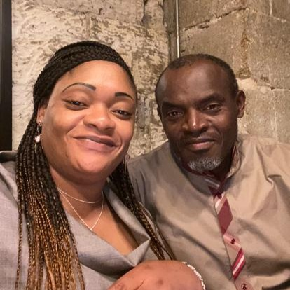
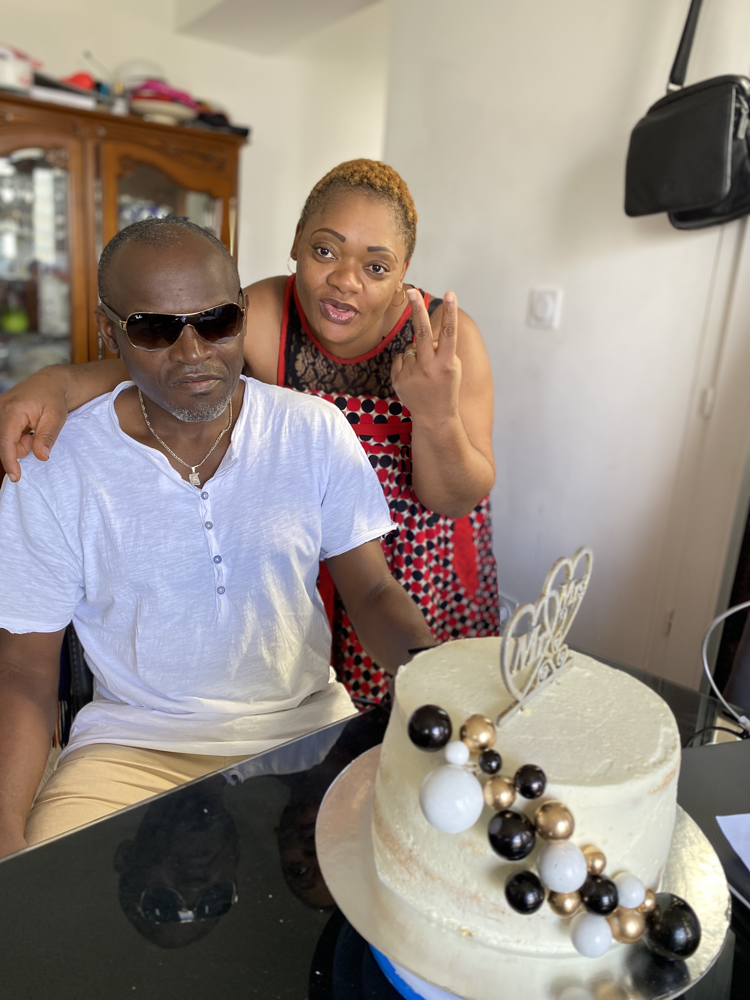
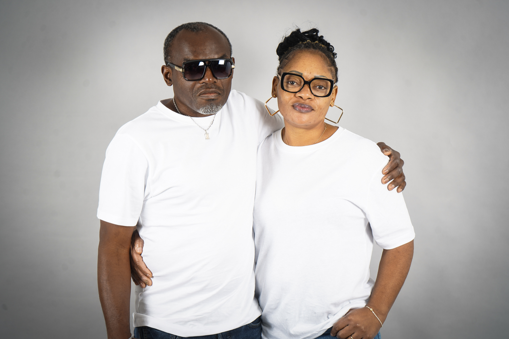
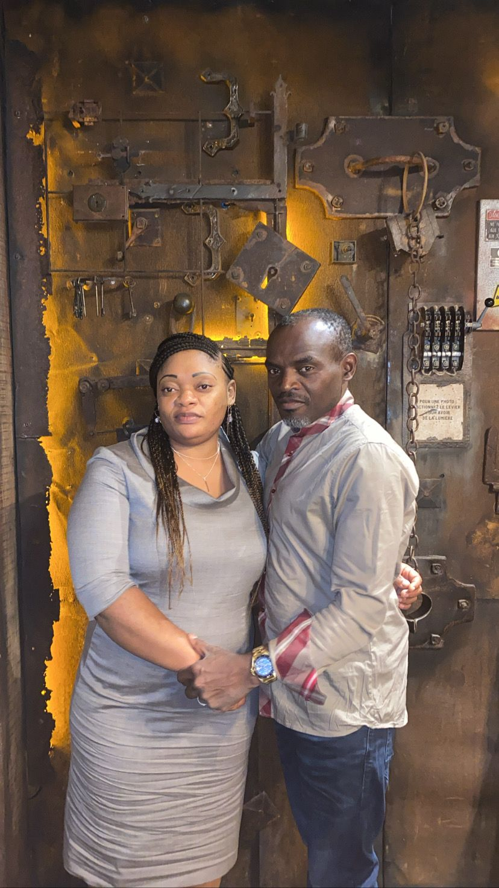
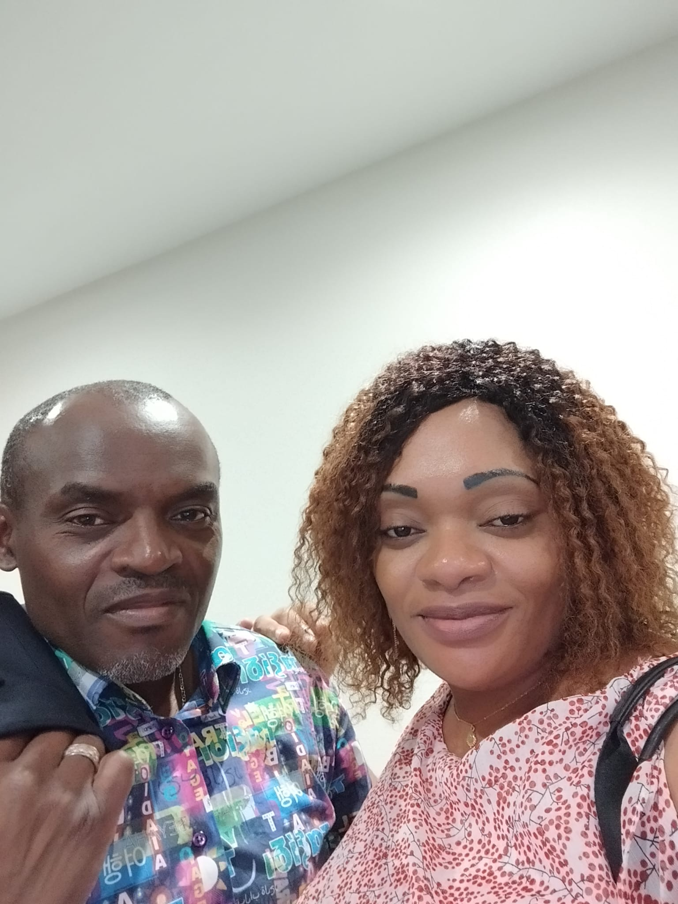
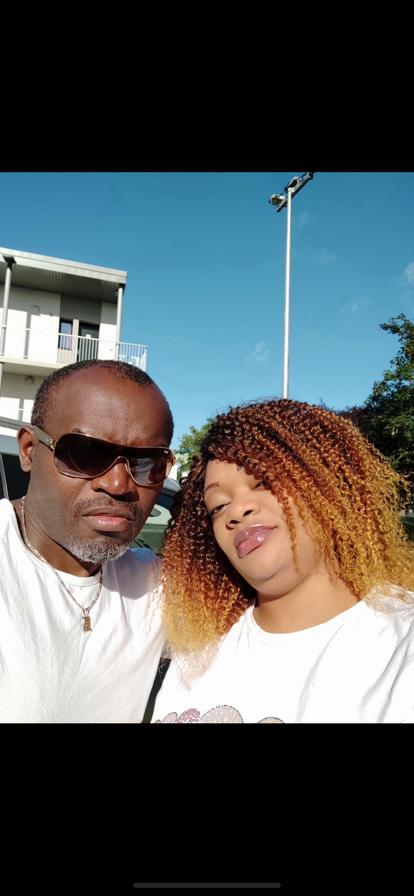
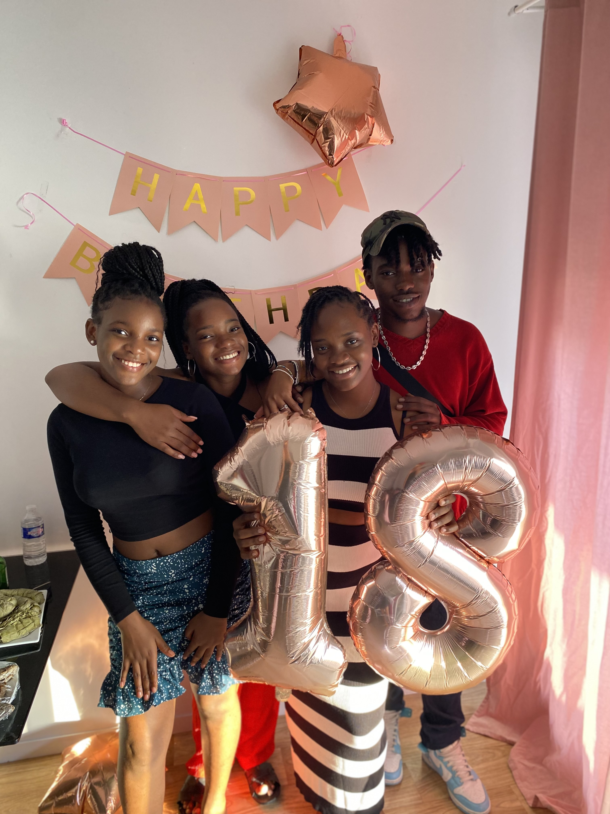
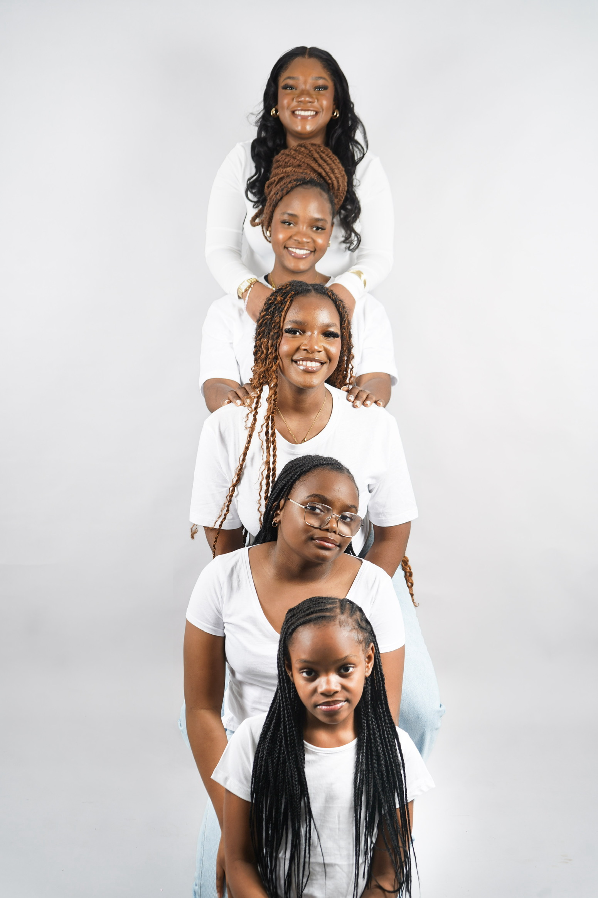
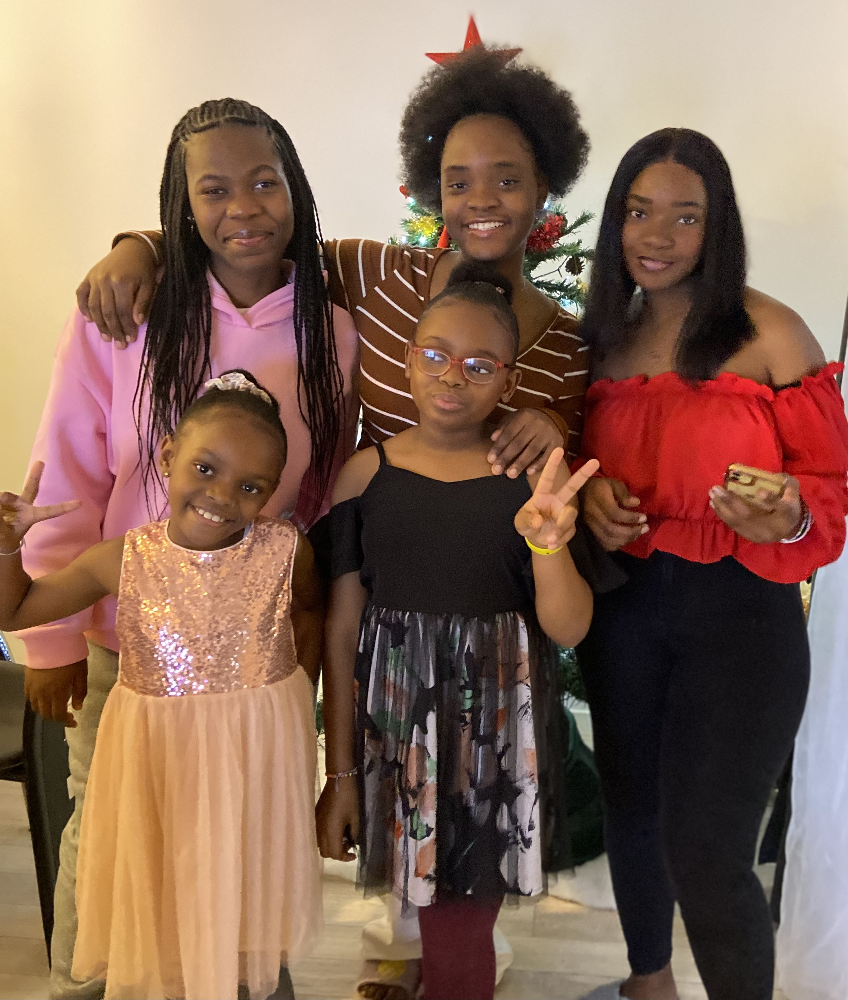
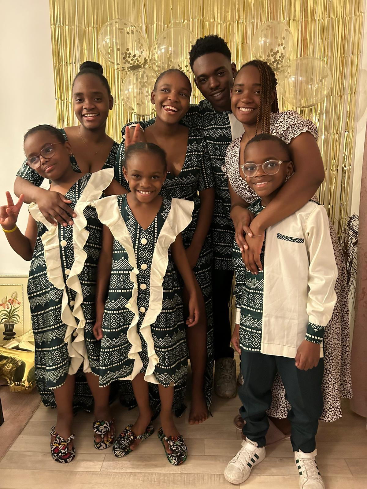

❤️ Notre Histoire
Notre histoire a commencé en 2013, lorsque nos chemins se sont croisés pour la première fois. À ce moment-là, nous étions loin d’imaginer que cette rencontre allait changer nos vies pour toujours.
Nous venions tous les deux avec notre propre histoire. Carole était déjà maman de quatre merveilleux enfants, et Alain était papa d’un enfant. Peu à peu, nous avons appris à nous connaître, à nous comprendre et surtout à construire quelque chose de solide ensemble.
Ce qui nous a rapprochés, ce sont les valeurs que nous partagions : l’amour de la famille, le respect, la foi, le soutien et l’envie de bâtir un foyer rempli de paix et d’amour.
Au fil des années, nous avons traversé des moments de joie, des défis, des épreuves, mais aussi énormément de bonheur. Ensemble, nous avons grandi, appris l’un de l’autre et construit une famille unie.
Entre 2015 et 2016, notre bonheur s’est encore agrandi avec la naissance de nos trois merveilleux enfants, venant compléter cette belle famille recomposée qui compte aujourd’hui huit enfants. Chaque naissance a été une bénédiction et une nouvelle preuve de l’amour qui nous unit.
En 2018, Alain a fait sa demande en mariage. Ce fut un moment rempli d’émotion, un souvenir précieux que nous garderons toujours dans nos cœurs.
Puis en 2021, nous avons célébré notre mariage civil, entourés de nos proches et de nos familles.
Aujourd’hui, nous avons choisi de célébrer notre mariage traditionnel et religieux au Cameroun, entourés des personnes qui comptent le plus pour nous. Partager ce moment avec vous représente énormément à nos yeux.
Notre histoire est la preuve que l’amour peut unir les cœurs, rassembler les familles et créer quelque chose de magnifique. Et ce n’est que le début de notre aventure…
“La famille n’est pas seulement une histoire de sang, mais une histoire d’amour, de soutien et de choix.”
📸 Nos souvenirs
❤️ Alain & Carole






👨👩👧👦 Nos enfants




💍 Mariage civil (2021)


“La famille n’est pas seulement une histoire de sang, mais une histoire d’amour, de soutien et de choix.”